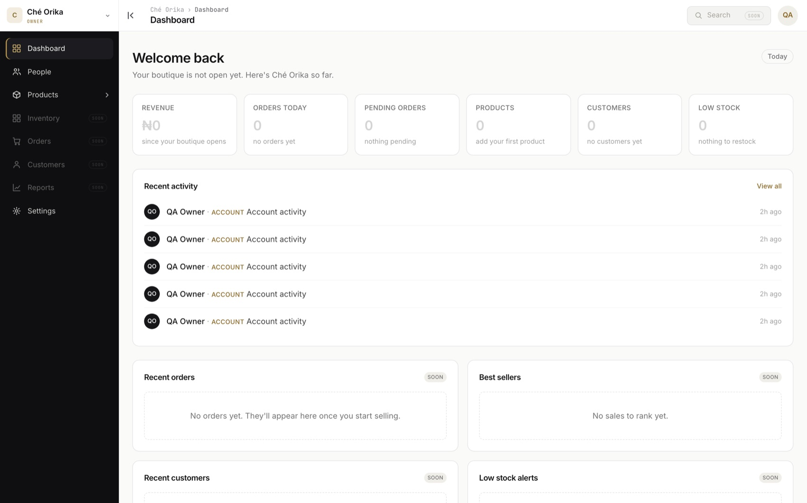
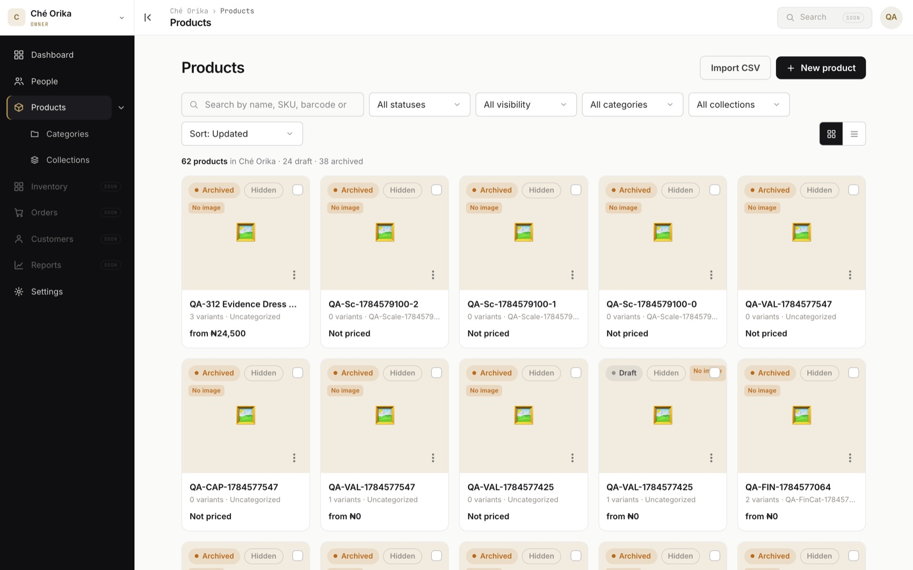
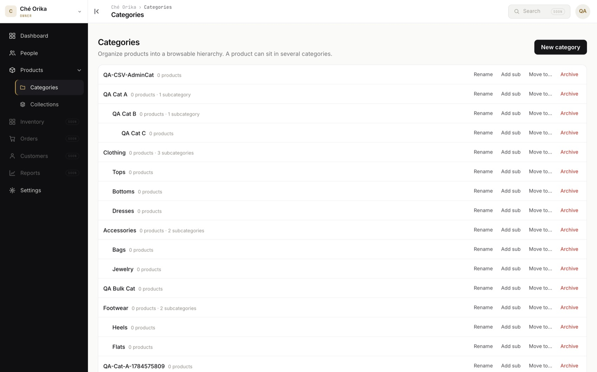
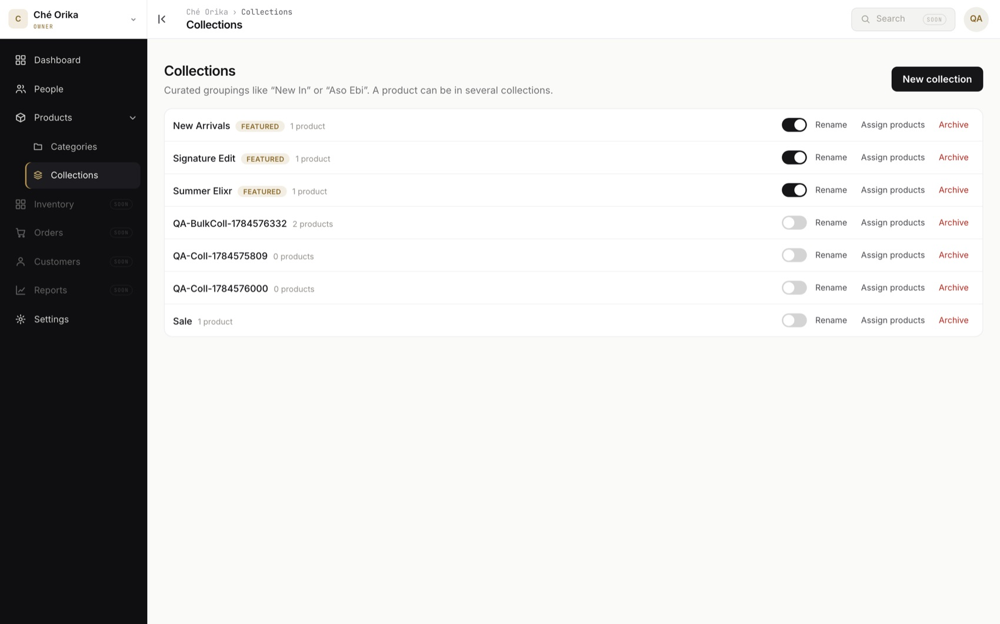
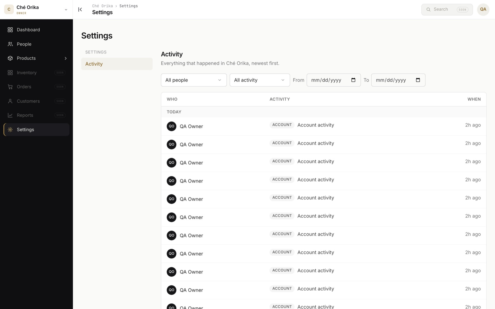
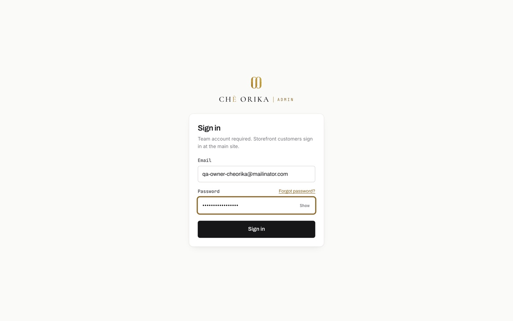
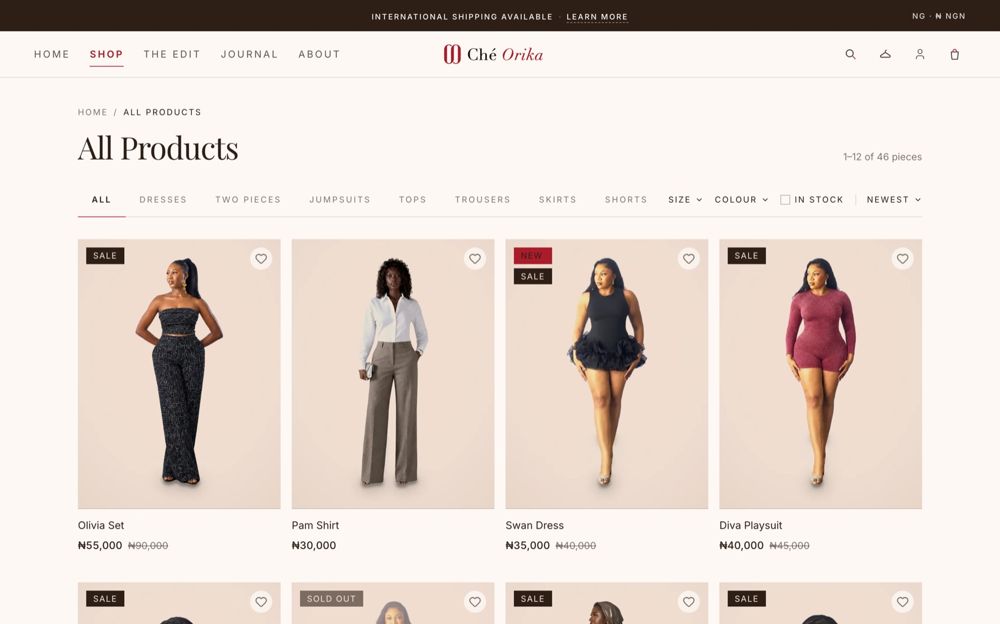
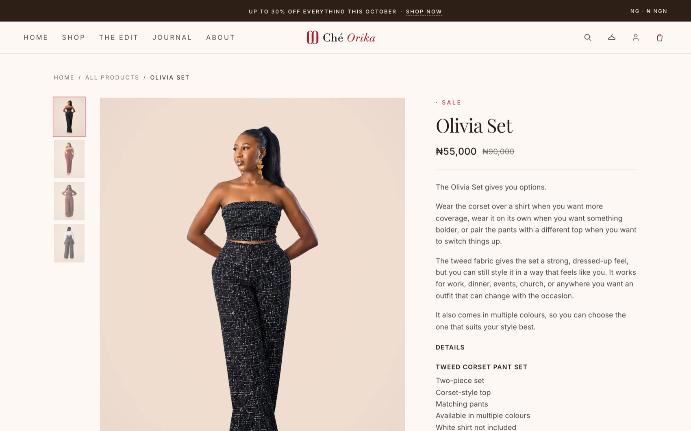

Ché Orika
A full-stack, multi-tenant commerce platform I built to run a fashion business end to end, not just to sell online. It pairs a premium storefront with an operational admin portal that is the single source of truth for identity, catalog, inventory, orders, payments, media, and audit. I designed the architecture, wrote the PRDs, made the technical calls, and shipped it with an AI-assisted engineering workflow. It has been live and taking real orders since September 2026, across the website, the boutique, WhatsApp, Instagram, and phone.

Most small fashion brands stitch together a storefront, a spreadsheet, a POS app, and a separate CRM, and end up with data that never reconciles and no single place that is actually true.
I wanted one system where the storefront, the boutique floor, inventory, and finance all read and write through the same governed backend. Stitching SaaS together could not give me brand-level ownership of data, role-scoped access to money, or a foundation that survives the jump from one boutique to many. So I decided to build my own, with AI as my engineering partner.
- Multi-tenant from birth. A strict hierarchy: a Tenant owns Brands, a Brand owns Stores, and Stores own inventory, orders, and fulfilment. It launched for one brand, but I designed for tenant isolation up front so it can host many brands and stores without a structural redesign.
- The admin portal is the source of truth. The storefront, a future POS, and any integration are clients that consume platform data. No downstream surface owns business state. This is the decision that makes it an operating system rather than a website.
- Host-split identities. Staff authenticate as an admin user on the admin host; customers are a completely separate identity on the storefront. The two never share a session, table, or cookie. Authentication runs on Better Auth; authorization is my own role and permission model, kept separate so identity and policy can evolve independently.
- Membership-based access. A user belongs to a tenant and gains a brand through a membership that carries a role. Every request validates the authenticated user, the brand, an active membership, and the required permission, enforced server-side, never trusting the URL or the frontend.
- Decoupled catalog schema. For the catalog I introduced a fresh, brand-scoped schema physically separate from the legacy storefront tables, so building it could not touch live revenue.
The stack: Next.js App Router on Vercel, Neon Postgres with Prisma, Better Auth, Cloudinary for media, Paystack for payments, and Resend for transactional email. Money is modelled as Decimal, keys are UUIDs, and business records soft-delete rather than hard-delete so financial and audit history stays intact.






- Customer storefront (live). Browsing, bag, and checkout with server-side cart and totals recomputation, so a crafted payload cannot set its own price. Paystack payments, order tracking, atomic stock locking to prevent oversell, and editorial surfaces (lookbook, journal, edits).
- Identity & auth (live). A single Better Auth login, one account per employee, brand switching for multi-brand users.
- RBAC & user management (live). Four roles, Owner, Admin, Staff, and Trainee, driven by a versioned permission catalog. People management, tokenized single-use invitations, multi-owner support, immutable audit logging, and an activity feed.
- Dashboards (live). A full KPI dashboard for Owners and Admins, and a separate money-free operations dashboard for Staff and Trainees.
- Product catalog. Products as concepts with dynamically generated variants, per-variant pricing with VAT, per-brand auto SKUs plus printable barcodes, hierarchical categories, many-to-many collections, signed media uploads, draft autosave, and soft-delete with restore.
- Inventory and point of sale (live). One shared stock pool per variant that the website and the boutique till both draw from. Every sale writes an immutable stock movement in the same transaction as a guarded decrement, so overselling is impossible rather than unlikely. Twelve-minute checkout reservations, CSV stock import, and server-side price authority at the till.
- Storefront CMS (live). The portal runs the storefront: fourteen homepage section types, eleven store pages, collections and scheduled drops, search with filters, SEO metadata, and social share cards on permanent public image URLs. The CMS controls content, order, and visibility, never layout, so the designed homepage cannot be broken from an admin form.
- Checkout and money (live). Store credit, coupons, and a wishlist on top of the existing cart and Paystack checkout, with live courier rates and booking through Shipbubble.
- Orders and fulfilment (live). An order workflow engine with an explicit transition guard, returns, refunds to store credit or exchange, notifications, and a sales analytics dashboard. The guard closed a real bug where cancelling an already-shipped order would have put its stock back on the shelf.
- Five sales channels (live). Boutique, WhatsApp, Instagram, and phone sales are recorded in the portal alongside online orders, so one stock count and one sales report cover every channel. Staff use it daily.
- Brand system re-skin (live). A full move to the brand's v1.0 identity, which meant first replacing colours hard-coded across the storefront with design tokens, then re-skinning colour and type while keeping page structure intact.
- Discovery (live). A product feed to Google Merchant Center for free shopping listings, with over a hundred products approved, plus structured data and an SEO sweep across the storefront.


The catalog and inventory model was the deep work. Fashion breaks naive product tables: a "product" is a concept, and the thing you actually sell, price, count, and scan is the variant, so inventory lives on the variant, never on the product.
Getting that right meant per-brand-unique SKUs, scannable barcodes, variant generation that stays efficient and bounded, and money modelled as Decimal to kill a rounding bug at the schema level. The sharpest nuance was the cost and margin firewall: pricing edits are Owner and Admin only, and Staff must never see cost or margin at all. I gated that on the read boundary, not just by hiding UI, so cost and margin are stripped from payloads and the server returns a 403, fail-closed. "Already exposed on another screen" is not an acceptable reason to leak it.
- Build an operating system, not a storefront. The admin portal is the source of truth, designed around operational efficiency, so the storefront is one channel over a governed core rather than the system of record.
- Decouple the catalog to protect live revenue. Rather than evolve the legacy storefront tables under live load, I stood up a parallel brand-scoped schema so a large build could never break checkout, and accepted a deliberate future cutover as the cost.
- Pay for the cutover while it is cheap. A code audit showed we were running two parallel commerce systems, the original single-brand checkout and the new multi-brand catalog, both with no customers yet. I chose to collapse them into one immediately: keep the proven checkout code, drop the throwaway data, and port the money paths onto the new catalog. Adversarial QA then had to prove brand isolation, webhook replay safety, and no oversell at ten thousand variants and over a hundred thousand stock movements before release.
- Harden what exists before building what does not. When the checkout sprint was scoped, a review showed about 80 percent of it already existed. I reframed the sprint as hardening and go-live, and adversarial testing caught two critical money bugs, including store credit being lost on a failed payment. Each needed more than one fix, because the first fix left a sibling path open. Now we verify the class of bug, not the instance.
- Gate money and PII fail-closed by role. Cost, margin, revenue, and exports are enforced at the read boundary with server-side 403s and payload stripping, defaulting to closed unless the role is privileged.
Running an AI engineering team taught me that the product manager's leverage is in the guardrails: crisp specs, decision records that capture why, and release gates. My hardest lesson was that "all green" can still be wrong. A sprint passed per-screen review and endpoint checks, yet a wizard was never wired to its backends. Now I verify render-deep and data-deep, walking the whole journey, not just confirming screens render and endpoints return 200.
Production taught me the same lesson again. Our database hit its plan quota and the shop kept returning HTTP 200, with the header, navigation, and copy all present, and zero products and zero prices. A status check would have passed it. A data-and-render regression check caught it. Since then, every release is verified on production as its own environment, by looking at real data on the real page.